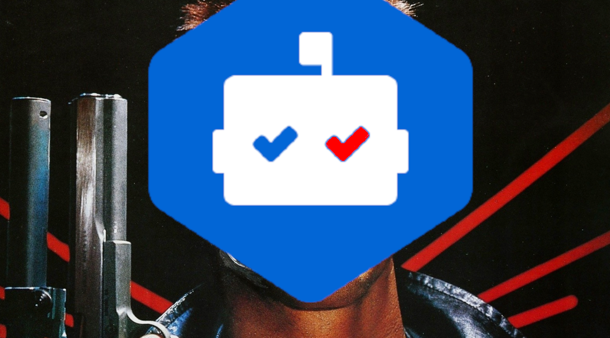

dependabot: code analysis and dependency management

What is Dependabot?
Dependabot is a Game Changer dependency management tool for GitHub repositories. It analyzes your repo and alerts when there is a upgrade available or a vulnerability has been spotted.
How does Dependabot work?
When you enable Dependabot for your repository, it starts by scanning your codebase for outdated dependencies. It then creates a pull request with the updated dependencies, which you can review and merge into your codebase.
Dependabot uses a set of default update strategies for each package manager it supports. These strategies include:
- Version updates: Dependabot updates the dependency to the latest available version.
- Range updates: Dependabot updates the dependency to the latest version within a specific range.
- Lockfile updates: Dependabot updates the lockfile to ensure that all dependencies are up-to-date.
Enabling Dependabot
Create a .github/workflows/dependabot.yaml file and add the following YAML:
version: 2
updates:
- package-ecosystem: "package-manager-name" # cargo, pip, gomod, npm etc
directory: "/"
schedule:
interval: "daily"
On GitHub.com, navigate to the main page of the repository. Under your repository name, click "Settings".
In the "Security" section of the sidebar, click "Code security and analysis", enable "Dependency graph",
and after that enable what you wish to use.
By using Dependabot, you can ensure that your codebase is always up-to-date, secure,
and free from vulnerabilities (well most of them). This allows you to focus more on developing features
and less on manual dependency tracking, ultimately improving your development workflow.